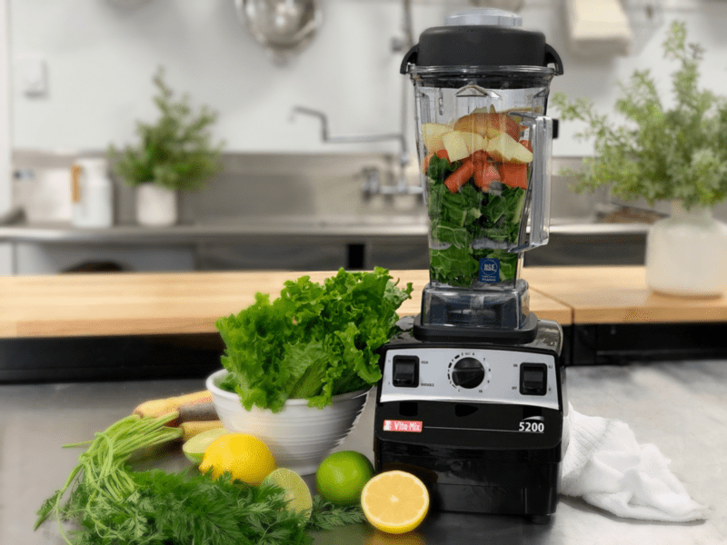

Juicing with a Blender
So, I heard through the grapevine that you want to start making your own fresh juices, but buying a juicer isn’t part of your current budget plan. Not a problem, I have a solution. A good blender makes an excellent alternative to juicers until you can afford one. Blender juicing works best with juicier fruits such as peaches, apricots, pears, grapes, berries, and oranges. If you own a high-powered blender such as the Vitamix or Blendtec, you will have a better chance pulverizing the heck out of firmer fruits and veggies, which will provide you with a smoother juice.

When I first started to make juices, back in 2008, I used the blender method for over a year. Then I graduated to a juicer. At first, I used to create fruit and veggie juices, but as the years have passed I found that my body can’t handle all the sugars, so now I lean more towards straight green juice. Just the idea sort of makes you shudder doesn’t it? Trust me, give it time, and your taste buds will shift.
Before we dive into it, let me say that blending fruits and veggies can be enjoyed strained or unstrained, it all depends on your end goal. If you don’t strain the juice, you are ultimately creating a smoothie. Which is great, there are tons of health benefits in that, the fiber being one of them. Fiber helps to stabilize blood glucose and makes you feel full longer. But if you want to juice for a cleansing or detox reason, or you need a pure juice for a recipe, then this is just one way that you can go about it.
Making Do With What You Have
Using a blender for juicing isn’t the best way, but when you are just starting, and money or space is an issue, it’s just fine. We all have to start somewhere. In time, as you continue to eat a cleaner diet, you will eventually want to invest in a cold-press juicer. You can click (here) to see what I recommend for when that time comes.
In the meantime, you are going to need a blender and either a fine mesh strainer, cheesecloth, or a nut milk bag. The nut bag would be my choice, but any of these will work. These are items you will want in your kitchen “tool” box anyway for other food prep tasks.
Why Would I Use a Blender Instead of a Juicer?
- Can’t afford a juicer.
- Don’t have space for a juicer.
- Wanting to do a juice fast/cleanse/detox and don’t own a juicer.
- Suffer from digestive issues and wish to give your digestion a little break, so you want some nutrient-dense juice… but you don’t own a juicer.
As mentioned above, in order to “juice without a juicer,” you will need to take the extra step of straining the juice to remove the fiber (pulp). Below I share multiple ways in which you can go about this. I rated each one showing you my preference. Speaking of pulp, do not throw that stuff away! It can be used in creating raw crackers and breads. If you don’t have time to deal with it or don’t have enough to use, place the pulp into a freezer-safe container, label it, and freeze until later use.
Also, it’s important to note that in order to get the most nutrients from the juice, drink it immediately. Do not store it for later because the blending method produces some heat and oxidizes your juice more than cold-press juicers. So, let’s get started…
Straining Devices
Nut Bag
- 1st Choice
- The nut bag is the best because you hand-squeeze the liquid through the bag which makes it much more efficient in getting most of the juice out, leaving behind a much drier pulp.
- They are easy to wash by hand and dry quickly when hung up.
- They are reusable and can be used in other raw food techniques.
- Be sure to remove rings and trim any jagged fingernails before using to keep from puncturing the bag. Once you do, that’s the end of it, and it’s a sad, sad day.
Fine Mesh Strainer
- 2nd Choice
- The fine mesh strainer won’t filter the juice as well as a nut bag because the holes are not as microfine. Therefore, you may end up with some pulp in your juice.
- It will take more time to press the juice (with the back of a spoon) through all the pulp and holes of the strainer.
- They are pretty easy to clean with a scrub brush and will last a long time if properly maintained.
- They can be used with other raw food techniques.
Cheesecloth
- 3rd Choice
- Cheesecloth is on the messier side since you have to spread it out in a bowl or strainer and then gather up all edges, twist, and squeeze the juice out.
- Be sure to remove rings and trim any jagged fingernails before using to prevent tearing the cheesecloth.
- They are mostly one-time use. You can wash it by hand and spread it out to dry, but the overall lifespan is shorter than the other methods.
- Make sure it is a fine mesh weave. You may have to double or triple it so you can separate the juice from the pulp.
- Look for unbleached cheesecloth.
Pantyhose!
- Desperate Choice
- Yep, I said pantyhose. If you are REALLY in a pinch, you can cut the foot off of a new or clean pair of pantyhose and use them just like you would a nut bag. They are not as durable, but when times are tough, and you WANT that juice… nothing can get in the way!
- Be sure to remove rings and trim any jagged fingernails before using so you don’t puncture the hose. No one wants a run in their pantyhose whether you are wearing them or using them to strain juices.
Blender
High-End – High-Powered Blender
- Because I want you to be successful from the get-go, I am going to recommend a high-powered blender. If you plan on enjoying a high-raw diet or one where you can make smoothies, soups, dips, sauces, dressings, cheesecakes, etc. then find a way to invest in one. If you do, you can add juicing to the list of things that you can do with it.
- Vitamix or Blendtec. Read more about high-powered blenders (here).
Mid-Range Blender
- I only have one mid-range blender that I can recommend because it’s the one that I have tried and tested. I can’t recommend something to you that I haven’t tried. It is the Breville BBL605XL Hemisphere Control Blender.
- It will handle your juicing needs, but you may need to blend longer if using produce that is a bit harder such as carrots or apples.
Low-End Blenders
- Just about anywhere you shop, you can find blenders a dime-a-dozen. Most machines found in department or big box stores run around $30 and up. I am not going to recommend these blenders. They won’t provide the results that you are looking for, and I would hate for you to be disappointed. But with that being said, if that is all you have, give it a try and see how yours works.
Making Juice Blender Style
Blending
- Start with fresh, clean, organic (if possible) produce.
- Add a 1/4 cup of water to the blender, followed by dark leafy greens. Blend for 30 seconds.
- If you are blending greens only, you can add some lemon juice to cut down on the bitter taste found in dark leafy greens. It can be added during or after the blending process.
- Add the remaining greens, fruits/vegetables, and water. Blend well (about one or two minutes) depending on blender quality.
- If you own a low to a mid-range blender, cut the produce into smaller pieces to help the blender liquefy the food.
- If leaves are sticking to the insides of the carafe, stop the blender, and push them down with a spatula. Or if you have a blender that came with a tamper, use that to push the leaves/veggies down.
- The amount of water that you add is up to you. You will need enough to keep the blades and produce moving.
Straining
-
- Select one of the methods mentioned above.
- It’s always best to enjoy the juice right away.
- If you must store it, pour it into a glass mason jar filling it up to the brim, cover with the lid and place it in the fridge.
- After being stored, it will do some separating. Give it a good shake before opening the lid.
- Don’t toss the pulp, add it to cracker batters for bulk, fiber, and to prevent waste.
I own the following blenders. If I had to pick just one, it would either be the Vitamix 750 or 5200 (both with tamper). If you are on a tight budget, the Vitamix 5200 or the Blendtec would be a great option. We use the Vitamix Vita-Prep for our food manufacturing company, so don’t feel any pressure to lay out the money for that one… unless needed.
Let’s Go Shopping
High-Powdered Blender
Mid-Range Blender
Nut Bags
Fine Mesh Strainers
Cheesecloth (unbleached)
Nouveauraw.com is a participant in the Amazon Services LLC Associates Program, an affiliate advertising program designed to provide a means for us to earn fees by linking to Amazon.com and affiliated sites – at no extra cost to you.
Thank you for your support! amie sue
© AmieSue.com